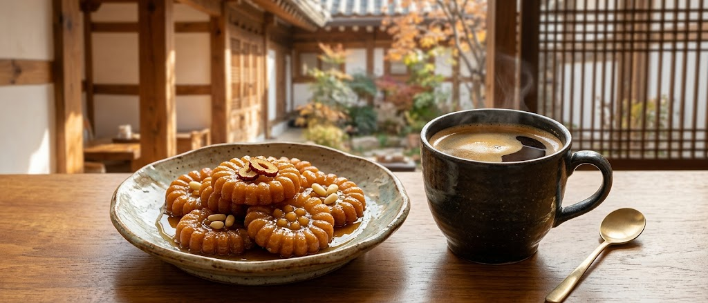
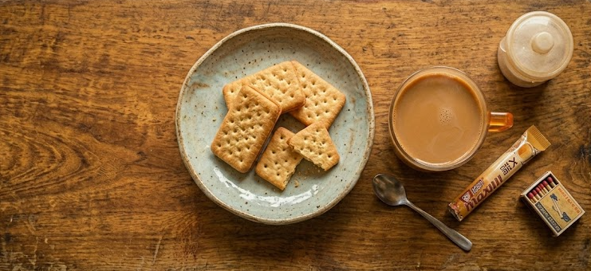
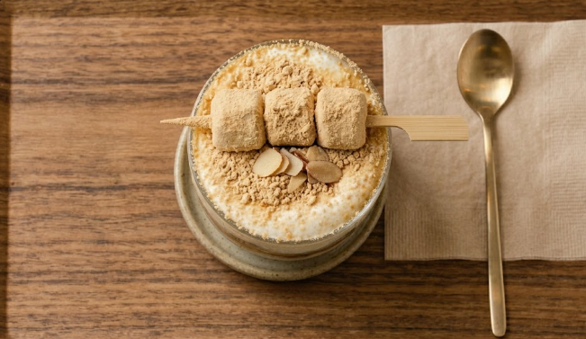
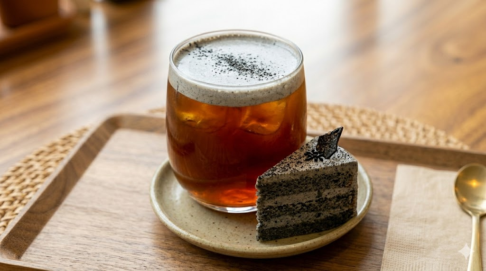

단짠의 정석 페어링. 쫀득한 약과의 묵직한 단맛과 깔끔한 아메리카노의 산미가 완벽한 조화를 이룹니다.
시원한 아메리카노 + 찹쌀 약과

추억의 '찍먹' 공식. 믹스커피의 달콤함을 촉촉하게 머금은 크래커가 입안에서 부드럽게 녹아내리는 한국인 소울 조합.
뜨거운 믹스커피 + 에이스 과자

고소함의 끝판왕. 전통 콩가루의 풍미와 진한 에스프레소, 쫀득한 미니 인절미 떡이 만나 완성된 힙한 뉴트로 음료.
스팀 밀크 + 에스프레소 + 고소한 볶은 콩가루 + 미니 인절미 떡 토핑
바삭하고 달콤한 달고나가 부드러운 우유와 진한 에스프레소 속에서 서서히 녹아내리며 특유의 쌉싸름하고 깊은 풍미를 선사하는 추억의 음료.
진한 에스프레소 샷 + 고소한 스팀 밀크 + 바삭한 수제 조각 달고나 가득

할매니얼 트렌드의 정점. 꾸덕하고 묵직한 흑임자 가나슈 갸또 케이크에 깔끔하고 청량한 콜드브루를 더해, 고소함은 살리고 입안은 산뜻하게 마무리하는 세련된 조합.
장시간 차갑게 추출한 콜드브루 + 고소한 흑임자 크림을 올린 갸또 쇼콜라
현재 당신의 지친 정신 상태를 스캔하세요. 최적의 당도 시스템 페어링을 실시간 연산합니다.
스팀 밀크 + 에스프레소 + 고소한 볶은 콩가루 + 미니 인절미 떡 토핑